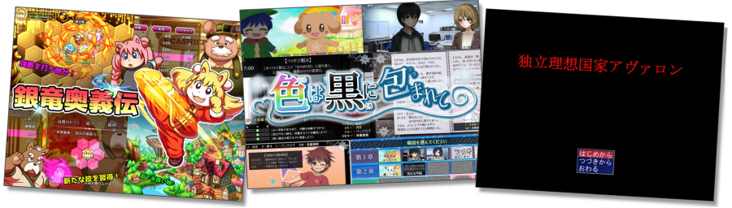
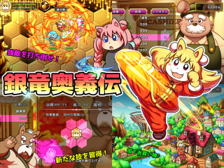
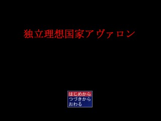
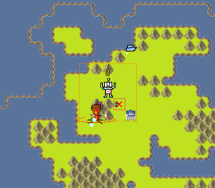
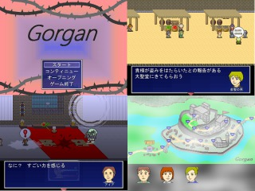

■2021-08-22 (日) 第13回ウディコン、結果発表！▼
ということで毎年の夏のお楽しみ、「WOLF RPGエディターコンテスト」も
8/21をもってとうとう結果発表＆閉幕となりました！
【WOLF RPGエディターコンテスト 公式サイト】

今回もいつも通り上位3作品の作品と、個人的ピックアップをご紹介します！
【第１位 『銀竜奥義伝』】 LAKO 様
クリックで拡大

総合1位は、SRPG風バトルゲーム、『銀竜奥義伝』！
見て分かるように画像やインターフェースがとにかくきれい！
基本はポイントを割り振って強化したり、装備やアイテムをそろえながら
次々にランクの高いバトルに挑むのですが、このバトルがまたアツい！
戦えば戦うだけプレイヤー自身も主人公もしっかり強くなれる安心設計ですし、
一方でスコアアタックを狙う場合は能力値を試行錯誤しながら
全勝するための最適解を探して遊ぶ！ といったプレイもできるので、
努力でもやり込みでも楽しめる一作です。
幅広い層の人がしっかり楽しく遊べるようになっているという点で、
全体的な完成度が非常に高いゲームだと感じます。
また、全体的にふとましい獣人キャラが多いので、
そういうキャラが好きな人はさらに大興奮できると思います！
（ちなみにいつも誤解されますが、
私は獣人キャラは一番大好きってわけじゃないんですよ！？
このゲームのキャラはみんなかわいいと思いますが！）
【第２位 『色は黒に包まれて』】 すたーあいす＊ 様
クリックで拡大
総合2位は、実話型アドベンチャーゲーム『色は黒に包まれて』！
実話を元にした重めのお話が繰り広げられるアドベンチャーゲームです。
ブラック企業で働く展開があったり（というかそれがメイン？）、
とある事情でうまく周りに理解されない立場を主観視点で
垣間見ることになる内容なので、心がえぐられる人にはちょっとつらい内容です。
なので「いまそういった内容を受け止められる余裕のある人向け」という
注意書きは付くのでしょうけれど、「そういう立場での追体験ができる」という意味で
とても大切な経験ができる一作だと思います。
なお、このゲームはその描写力も非常に巧みです！
怖いところは怖いのですが、いちおう怖い描写を
減らすオプションはあるので、その点はご安心です。
（といってもどのくらい怖くなくなるかは比較してません！
色々経験済みの人は、特にホラーじゃない途中のシーンを見ているだけでも
ホラー並みにキツくなるかもしれませんのでご注意を）
「これを表に出すのは非常に勇気がいることだった」というようなことも語られており、
相当な産みの苦しみがあったであろう一本です。
心に強く残る、とても貴重な作品です。
【第3位 『独立理想国家アヴァロン』】 CUSTOM BRAIN 様
クリックで拡大

総合3位は、STG風マス移動ディフェンスゲーム、『独立理想国家アヴァロン』！
ややアピールする意欲を感じにくいこの紹介画像から繰り広げられる
熱い理想国家の物語＋マス目移動型のディフェンス的シューティングゲームです。

※ロボがプレイヤー機です
ストーリー進行に従って得られるポイントを振り分けてプレイヤー機を強化し、
列強の国々から自国を守るというのがバトルパートなのですが、
これが非常に燃えます！
バトルパートはプレイヤー機の射程内に敵が来ると
勝手にそちらに向けて弾を撃ってくれるシステムなので、
プレイヤーの操作としては「移動する」だけ！
ですが、移動するたびに一定時間のクールダウンが発生するので、
敵弾をかわすタイミングをよく考えながら移動せねばなりません。
（移動クールダウンは改造で減らすことができます）
機体強化のポイントはストーリー展開に合わせていい感じに急に増えたり
減ったりすることもありますが、
とにかく「ある時点」で余分に稼ぐことはできないため、
「今あるポイントをいかに上手に振り分けて有利に戦いを運ぶか」という
試行錯誤をするのが非常に楽しい！
ロボットゲーにあるアセンブル（機体構成）要素の楽しみに近い面白さだと感じます。
それでいてパーツを合わせるよりも直感的な仕組みですから、より合理的！
もちろん、物語も昨今の様々な問題を取り入れられたなかなか見ない内容で
非常に興味をひかれるものなので、物語性部門で2位を獲得しておられる点も実に納得です。
そして肝心の「熱中度」部門では堂々の1位、その中央値も
「9点」（普通は最高位でも8点が多い）というぶっちぎりの高評価を獲得しています！
気になる方はぜひ遊んでみてください。
そしてもう一つ私が驚いたのは、上の画面写真と「おめえ、ノンポリか？」という
説明文のゲームでもちゃんとみんな手に取って
しっかり評価してくださっているという事実でした。
ウディコン一般参加者の皆さまがすごい。強すぎる。
これら紹介させていただいた上位3位は、
どれも異なる方向に破壊力たっぷりなゲームです！
そして今年はトップ層に限らず、
エントリー作品はどれを遊んでも損のない品質に仕上がっており、
順位が付いているものはどれもこれも触れれば「おおー！」と言えるものばかり！
（というより「おおー！」と言えるものが順位外にも普通に溢れている感じがあります。
もはや順位が付くこと自体が凄い！）
結果発表ページには部門別順位や一般投票コメントなども掲載されていますので、
それらも参考にしつつ、気になる作品があればぜひ触ってみてください！
たとえば新しいゲームに触れてみたい人は「斬新さ」部門を、
キャラクターや物語の良さを楽しみたい人は「物語性」部門がおすすめです。
おまけ紹介！
今回特に印象に残ったゲームとして、
『ゴルガン』をピックアップさせていただきます！
【個人的ピックアップ 『ゴルガン』】 KindBird 様
クリックで拡大

『ゴルガン』はダークファンタジーRPGです。
初めて遊ばせていただいたときは、とにかく
「工夫がうまい！」と感じさせられる部分が非常に多い一作でした。
たとえば以下の点！
◆見慣れたサンプルマップチップを、奥行きを感じられるよう
斜め感を出す形にアレンジすることで見栄えを大幅に向上させている。
ウディタのベーシックなマップ配置はどうしても「うーんウディタゲーっぽい！」
と思っちゃうところがありますが、こういった工夫でそれを回避してるのが素晴らしい！
私も「RPGのマップの見せ方は課題だなー」という課題を抱えていたところなので
こういう工夫でうまく格を高く感じさせられるという実例は非常に勉強になります。
◆戦闘シーンもおそらく基本システムながら、キャラ配置をうまくすることで
サイドビュー戦っぽく見せていて安っぽく見せない工夫をしている。
◆戦闘バランスも工夫されていて独特の味が出るようにしているのと、
頭を使う必要がある、ひりつく内容に仕上げられている。
（ただ遊びやすさ10位だったので人によってはちょっと難しかったかも？）
◆序盤から緊張感あるストーリー！ それ以降も「重さ」を感じる選択肢が続出！
「これぞRPGだよなあ！ 大好き！」と感心した点です。
他の展開も見たくなるという意味のリプレイ性もしっかり用意！
という感じで、「現状の技術力でやれる範囲で目的を達成する作り方」
が非常に巧みなのと、「RPGというジャンルに私が欲しいもの」が
ものすごくきっちり揃っていたので、
「グラフィック面に関しても自作システム面に関しても
まだまだ伸びしろいっぱいある状態でこれって何！？
効果的な手しか打ってないじゃん！ 作者さまこの先どうなっちまうんだ！？」
と驚かされた一本でした。
私も「技術がないなりに効率的な手段」を考える自信はほどほどにあったのですが、
ひたすら効果的な工夫を全体にわたってここまでおこなえる
意欲とセンスはそうそう真似できないと思います。
非常にすばらしい物語性のかげに隠れそうになっていますが、
ゲーム作りの巧さのセンスも相当！
そういう意味で「これすごい！」と感じさせられた一作でした。
今できることを最大限に使いこなした作品！ こういうの憧れますね！
『ゴルガン』は総合6位を獲得されただけあって
内容もバッチリ面白いので、気になる人はぜひ遊んでみてください。
【次回第14回について】
さて、ウディコンは来年2022年の『第14回』も開催予定です！
すでにスケジュールも決定済みなので、また300日以上に戻ったカウントダウンを
眺めながらの日常が再開されます。
私も体の不調が増しているので、なんとか来年までは元気でいたいですね。
それでは、第13回ウディコンに関わってくださった全ての関係者の皆さま、
今年も本当にありがとうございました！
よければ来年もぜひ見ていただけますと幸いです！
2021-08-22 (日)  カテゴリ: ウディタ
カテゴリ: ウディタ
 カテゴリ: ウディタ
カテゴリ: ウディタ